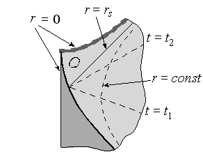

Образование чёрных дыр
Со времени теоретического предсказания чёрных дыр оставался открытым вопрос об их существовании, так как наличие решения типа «чёрная дыра» ещё не гарантирует, что существуют механизмы образования подобных объектов во Вселенной. С математической точки зрения известно, что как минимум коллапс гравитационных волн в общей теории относительности устойчиво ведёт к формированию ловушечных поверхностей, а следовательно, и чёрной дыры, как доказано Деметриосом Кристодулу в 2000-х годах (Премия Шао за 2011 год).
 С физической точки зрения известны механизмы, которые могут приводить к тому, что некоторая область пространства-времени будет иметь те же свойства (ту же геометрию), что и соответствующая область у чёрной дыры. Так, например, в результате коллапса звезды может сформироваться пространство-время, показанное на приведённом рисунке.
Изображённая тёмным цветом область заполнена веществом звезды и метрика её определяется свойствами этого вещества. А вот светло-серая область совпадает с соответствующей областью пространства Шварцшильда, см. рис. выше. Именно о таких ситуациях в астрофизике говорят как об образовании чёрных дыр, что с формальной точки зрения является некоторой вольностью речи. Снаружи, тем не менее, уже очень скоро этот объект станет практически неотличим от чёрной дыры по всем своим свойствам, поэтому данный термин применим к получающейся конфигурации с очень большой степенью точности.
В реальности из-за аккреции вещества, с одной стороны, и (возможно) хокинговского излучения, с другой, пространство-время вокруг коллапсара отклоняется от приведённых выше точных решений уравнений Эйнштейна. И хотя в любой небольшой области (кроме окрестностей сингулярности) метрика искажена незначительно, глобальная причинная структура пространства-времени может отличаться кардинально. В частности, настоящее пространство-время может, по некоторым теориям, уже и не обладать горизонтом событий. Это связано с тем, что наличие или отсутствие горизонта событий определяется, среди прочего, и событиями, происходящими в бесконечно удалённом будущем наблюдателя.
По современным представлениям, есть четыре сценария образования чёрной дыры:
- Гравитационный коллапс (катастрофическое сжатие) достаточно массивной звезды на конечном этапе её эволюции.
- Коллапс центральной части галактики или протогалактического газа. Современные представления помещают огромную () чёрную дыру в центр многих, если не всех, спиральных и эллиптических галактик. Например, в центре нашей Галактики находится чёрная дыра Стрелец A* массой .
- Формирование чёрных дыр в момент сразу после Большого Взрыва в результате флуктуаций гравитационного поля и/или материи. Такие чёрные дыры называются первичными.
- Возникновение чёрных дыр в ядерных реакциях высоких энергий — квантовые чёрные дыры.
Чёрные дыры звёздных масс
Чёрные дыры звёздных масс образуются как конечный этап жизни звезды, после полного выгорания термоядерного топлива и прекращения реакции звезда теоретически должна начать остывать, что приведёт к уменьшению внутреннего давления и сжатию звезды под действием гравитации. Сжатие может остановиться на определённом этапе, а может перейти в стремительный гравитационный коллапс. В зависимости от массы звезды и вращательного момента возможны следующие конечные состояния:
- Погасшая очень плотная звезда, состоящая в основном, в зависимости от массы, из гелия, углерода, кислорода, неона, магния, кремния или железа (основные элементы перечислены в порядке возрастания массы остатка звезды). Такие остатки называют белыми карликами, масса их ограничивается сверху пределом Чандрасекара — около 1,4 солнечной массы.
- Нейтронная звезда, масса которой ограничена пределом Оппенгеймера — Волкова — 2—3 солнечные массы.
- Чёрная дыра.
По мере увеличения массы остатка звезды происходит движение равновесной конфигурации вниз по изложенной последовательности. Вращательный момент увеличивает предельные массы на каждой ступени, но не качественно, а количественно (максимум в 2—3 раза).
Условия (главным образом, масса), при которых конечным состоянием эволюции звезды является чёрная дыра, изучены недостаточно хорошо, так как для этого необходимо знать поведение и состояния вещества при чрезвычайно высоких плотностях, недоступных экспериментальному изучению. Дополнительные сложности представляет моделирование звёзд на поздних этапах их эволюции из-за сложности возникающего химического состава и резкого уменьшения характерного времени протекания процессов. Достаточно упомянуть, что часть крупнейших космических катастроф, вспышки сверхновых, возникает именно на этих этапах эволюции звёзд. Различные модели дают нижнюю оценку массы чёрной дыры, получающейся в результате гравитационного коллапса, от 2,5 до 5,6 массы Солнца. Характерный размер чёрной дыры при этом очень мал — до нескольких десятков километров.
Впоследствии чёрная дыра может разрастись за счёт поглощения вещества — как правило, это газ соседней звезды в двойных звёздных системах (столкновение чёрной дыры с любым другим астрономическим объектом очень маловероятно из-за её малого диаметра). Процесс падения газа на любой компактный астрофизический объект, в том числе и на чёрную дыру, называется аккрецией. При этом из-за вращения газа формируется аккреционный диск, в котором вещество разгоняется до релятивистских скоростей, нагревается и в результате сильно излучает, в том числе и в рентгеновском диапазоне, что даёт принципиальную возможность обнаруживать такие аккреционные диски (и, следовательно, чёрные дыры) при помощи ультрафиолетовых и рентгеновских телескопов. Основной проблемой является малая величина и трудность регистрации отличий аккреционных дисков нейтронных звёзд и чёрных дыр, что приводит к неуверенности в идентификации астрономических объектов как чёрных дыр. Основное отличие состоит в том, что газ, падающий на все объекты, рано или поздно встречает твёрдую поверхность, что приводит к интенсивному излучению при торможении, но облако газа, падающее на чёрную дыру, из-за неограниченно растущего гравитационного замедления времени (красного смещения) просто быстро меркнет при приближении к горизонту событий, что наблюдалось телескопом Хаббла в случае источника Лебедь X-1.
Столкновение чёрных дыр между собой и с другими массивными объектами, а также столкновение нейтронных звёзд, вызывающее образование чёрной дыры, приводит к мощнейшему гравитационному излучению, которое можно обнаружить при помощи гравитационных телескопов. Так 11 февраля 2016 года сотрудники LIGO объявили об обнаружении гравитационных волн, возникших при слиянии двух чёрных дыр массами около 30 солнечных масс на расстоянии около 1,3 млрд световых лет от Земли.
Кроме того есть сообщения о наблюдении в рентгеновском диапазоне столкновений чёрных дыр со звёздами. 25 августа 2011 года появилось сообщение о том, что впервые в истории науки группа японских и американских специалистов смогла в марте 2011 года зафиксировать момент гибели звезды, которую поглощает чёрная дыра.
Ближайшим кандидатом в чёрные дыры является один из компонентов двойной системы A0620-00 (V616 Единорога), находящийся на расстоянии 3000 св. лет от Солнца. Лебедь X-1 находится на расстоянии 6070 св. лет, VLA J213002.08 + 120904 — на расстоянии 7200 св. лет.
Сверхмассивные чёрные дыры
Разросшиеся очень большие чёрные дыры, по современным представлениям, образуют ядра большинства галактик. В их число входит и массивная чёрная дыра в ядре нашей галактики — Стрелец A*, являющаяся ближайшей к Солнцу сверхмассивной чёрной дырой.
В настоящее время существование чёрных дыр звёздных и галактических масштабов считается большинством учёных надёжно доказанным астрономическими наблюдениями.
Американские астрономы установили, что массы сверхмассивных чёрных дыр могут быть значительно недооценены. Исследователи установили, что для того, чтобы звёзды двигались в галактике М87 (которая расположена на расстоянии 50 миллионов световых лет от Земли) так, как это наблюдается сейчас, масса центральной чёрной дыры должна быть как минимум 6,4 миллиарда солнечных масс, то есть в два раза больше нынешних оценок ядра М87, которые составляют 3 млрд солнечных масс.
Первичные чёрные дыры
Первичные чёрные дыры в настоящее время носят статус гипотезы. Если в начальные моменты жизни Вселенной существовали достаточной величины отклонения от однородности гравитационного поля и плотности материи, то из них путём коллапса могли образовываться чёрные дыры. При этом их масса не ограничена снизу, как при звёздном коллапсе — их масса, вероятно, могла бы быть достаточно малой. Обнаружение первичных чёрных дыр представляет особенный интерес в связи с возможностями изучения явления испарения чёрных дыр (см. выше).
Квантовые чёрные дыры
Предполагается, что в результате ядерных реакций могут возникать устойчивые микроскопические чёрные дыры, так называемые квантовые чёрные дыры. Для математического описания таких объектов необходима квантовая теория гравитации. Однако из общих соображений весьма вероятно, что спектр масс чёрных дыр дискретен и существует минимальная чёрная дыра — планковская чёрная дыра. Её масса — порядка 10^(−5) г, радиус — 10^(−35) м. Комптоновская длина волны планковской чёрной дыры по порядку величины равна её гравитационному радиусу.
Таким образом, все «элементарные объекты» можно разделить на элементарные частицы (их длина волны больше их гравитационного радиуса) и чёрные дыры (длина волны меньше гравитационного радиуса). Планковская чёрная дыра является пограничным объектом, для неё можно встретить название максимон, указывающее на то, что это самая тяжёлая из возможных элементарных частиц. Другой иногда употребляемый для её обозначения термин — планкеон.
В последнее время предложены эксперименты с целью обнаружения свидетельств появления чёрных дыр в ядерных реакциях. Однако для непосредственного синтеза чёрной дыры в ускорителе необходима недостижимая на сегодня энергия 1026 эВ. По-видимому, в реакциях сверхвысоких энергий могут возникать виртуальные промежуточные чёрные дыры.
Эксперименты по протон-протонным столкновениям с полной энергией 7 ТэВ на Большом адронном коллайдере показали, что этой энергии недостаточно для образования микроскопических чёрных дыр. На основании этих данных делается вывод, что микроскопические чёрные дыры должны быть тяжелее 3,5—4,5 ТэВ в зависимости от конкретной реализации.